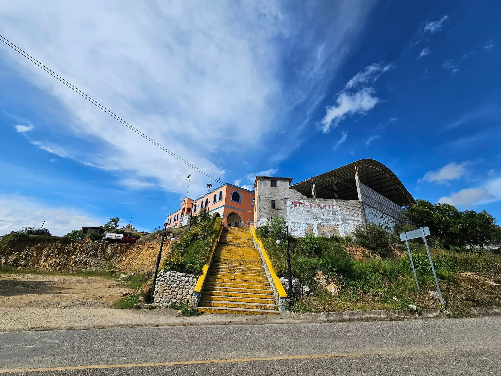
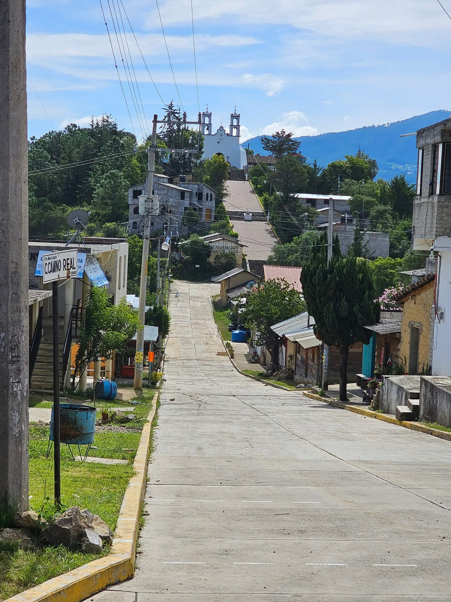

  Santa María Cuquila tiene el privilegio de contar con una zona arqueológica llamada "Ñuu Kuiñi" o Pueblo del Tigre, también se le conoce con el nombre de " la Cacica ", es un centro cívico ceremonial-residencial que floreció en el clásico temprano ( 300 a.c. - 300 d.c.) fue parcialmente ocupado hasta su abandono, una característica que sobresale del sitio arqueológico Ñuu Kuiñ este sitio es considerado como un sitio arqueológico |